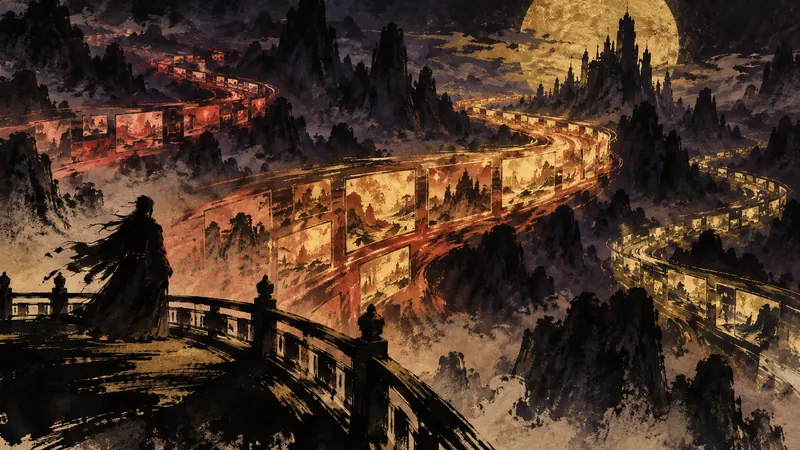

先鸦｜黎明快讯
8月中国游戏直播排行：RPG仍领先，《Lord of Mysteries》与《Mistfall Hunter》热度上升（译）
玩家能动性：政策如何限制它、产业如何塑造它、叙事设计如何实现它。

Niko Partners 的 2026 年 8 月中国游戏直播追踪显示，RPG 仍是观看量最高的类型，重大更新和预告直播持续拉动观众；新作《Lord of Mysteries》首次进入 RPG 类别榜单，排名第 16，在虎牙、斗鱼和哔哩哔哩累计获得 560 万次观看；《Mistfall Hunter》则以第 24 名进入同一榜单，累计获得 200 万次观看。前者于 8 月 21 日推出后，首小时新增 100 万注册用户，24 小时内超过 500 万，首周全平台营收超过 2,000 万美元；后者首周售出 100 万套。两款作品都因画面或战斗等特色受到关注，同时也面临付费、服务器或系统设计等方面的批评；直播曝光能否转化为长期观众，仍要看热度能否延续。
来源预览
Livestreaming Tracker August 2026 Highlights: RPGs Lead China’s Livestreaming Rankings While Lord of Mysteries and Mistfall Hunter Gain Traction
来源：Niko News by Niko Partners
先鸦观点
直播榜把玩家的注意力转化为可比较的数字，也容易让“看得多”先于“是否适合自己”，替人筛选游戏。对新作来说，这种曝光是入口；对玩家来说，保留自己选择和离开的余地，比跟着榜单补课更能守住时间。
本段为 AI 产出的观点，自动发布，人工于发布后复核。